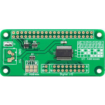

IO Pi Zero
The IO Pi Zero is a 16 channel digital expansion board designed for use on the Raspberry Pi Zero. The board is based around the MCP23017 16-bit I/O expander from Microchip Technology Inc.
The IO Pi Zero Expander is powered through the host Raspberry Pi using the GPIO port and extended pins on the GPIO connector allow you to stack the IO Pi Zero along with other expansion boards.
Features
- 16 Digital Inputs/Outputs
- Control via the Raspberry Pi I2C port
- Stack up to 8 IO Pi boards on a single Raspberry Pi
- Jumper selectable I2C addresses
- External 5V Input with isolation solder bridge
- Based on the MCP23017 from Microchip Technologies Inc
- Configurable interrupt output pins - Configurable as active-high, active-low or open-drain
- INTA and INTB can be configured to operate independently or together
- Configurable interrupt source - Interrupt-on-change from configured register defaults or pin changes
- Polarity Inversion register to configure the polarity of the input port data
Arduino, C, Node.js, Windows 10 IOT, Python 2 and Python 3 libraries are available on GitHub.
Details
|  |